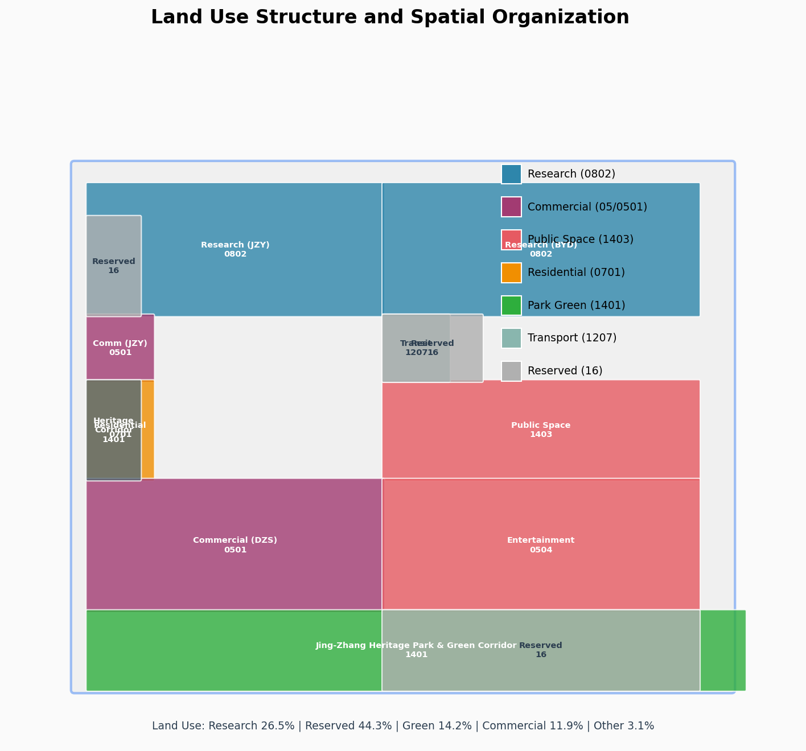
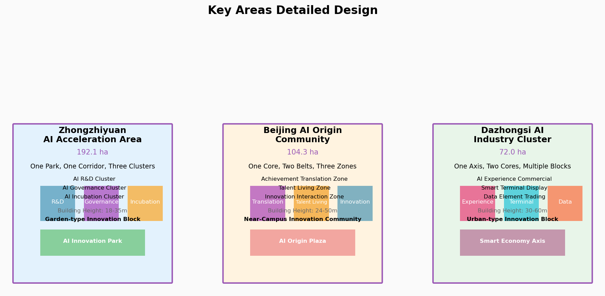
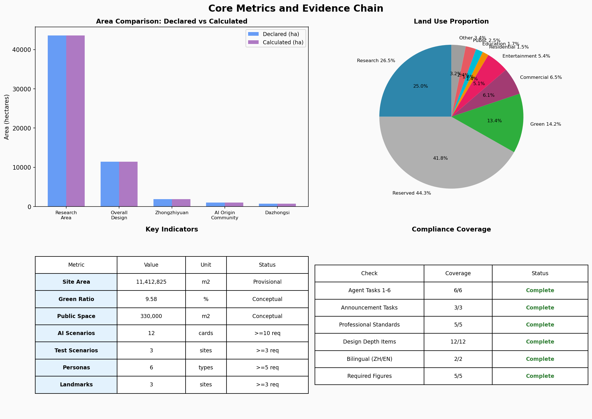

v2.0 — Compute Rails Reborn: A Century of Rails, One Line of Compute
Core Metrics
11,412,825
Site Area (m²)
provisional
9.58%
Green Ratio
conceptual
2.89%
Public Space Ratio
conceptual
12
AI Scenario Cards
>=10 required
3
Test Scenarios
>=3 required
6
User Personas
>=5 required
3
AI Landmarks
>=3 required
470,000
Building Base (m²)
conceptual
Figures

Fig 1: Three-Level Scope Framework

Fig 2: Land Use Structure

Fig 3: Key Areas Detailed Design

Fig 4: Mobility & Blue-Green System

Fig 5: Core Metrics & Evidence Chain
Compliance Coverage
✓ Agent Tasks 1-6 (6/6 Complete)
✓ Announcement Tasks 1.3, 1.5 (3/3)
✓ Professional Standards (5/5)
✓ Design Depth Items (12/12)
✓ Bilingual (ZH/EN)
✓ Required Figures (5/5)
Data Limitations
Provisional Boundaries: Official precise boundary polygons not yet public. All area metrics based on provisional boundaries. Recalculate after official release.
Forbidden Claims: No FAR, building height, road redline, or other statutory planning conclusions. All spatial suggestions are conceptual.